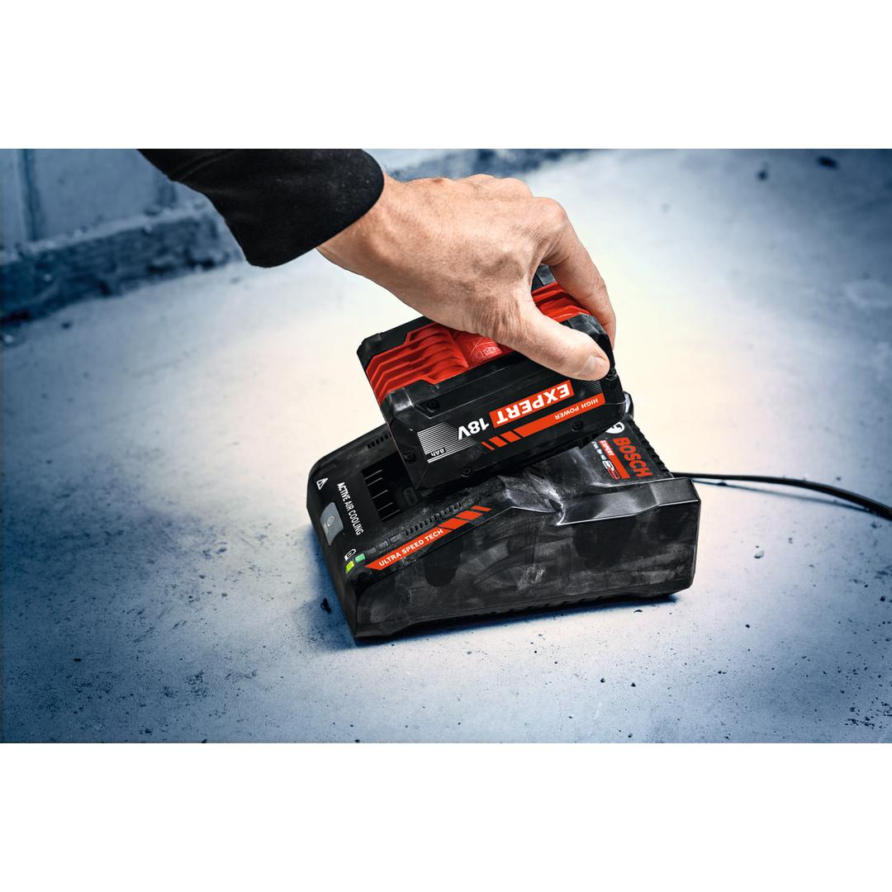
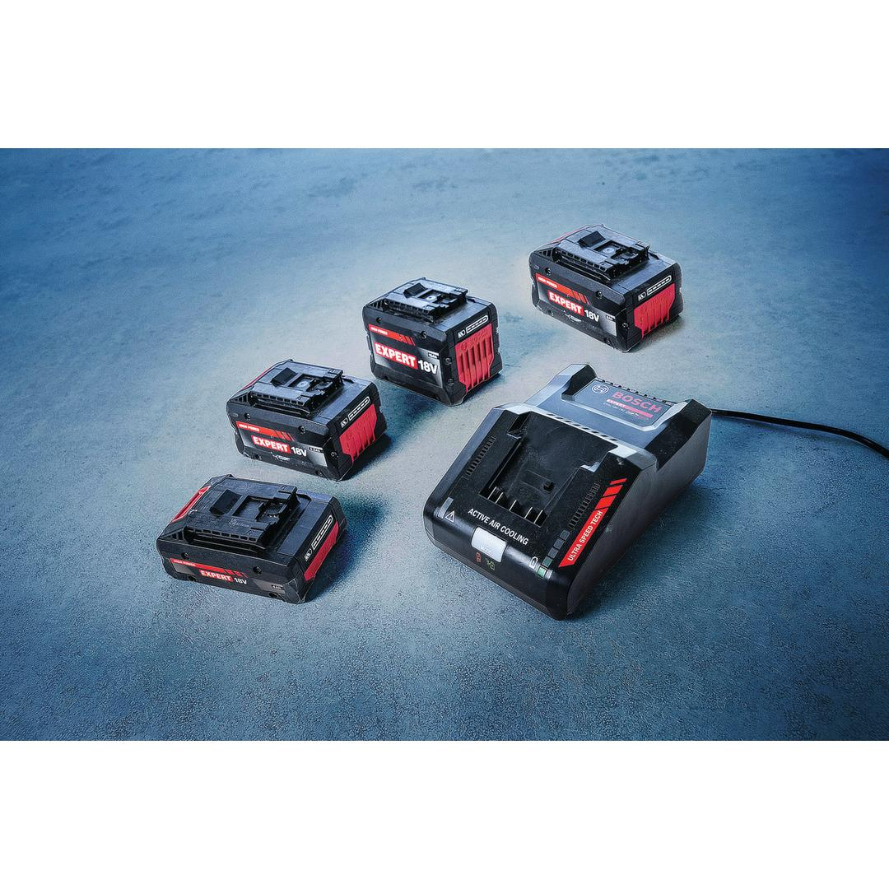
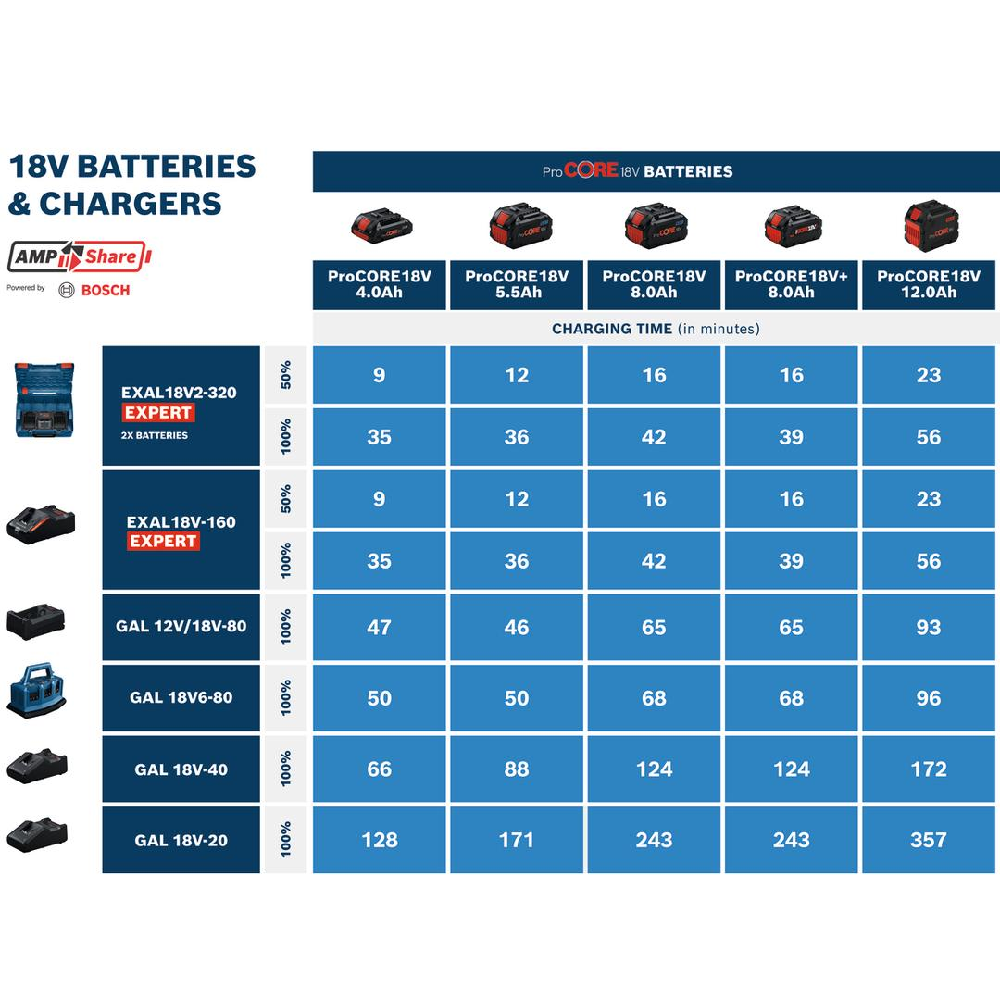
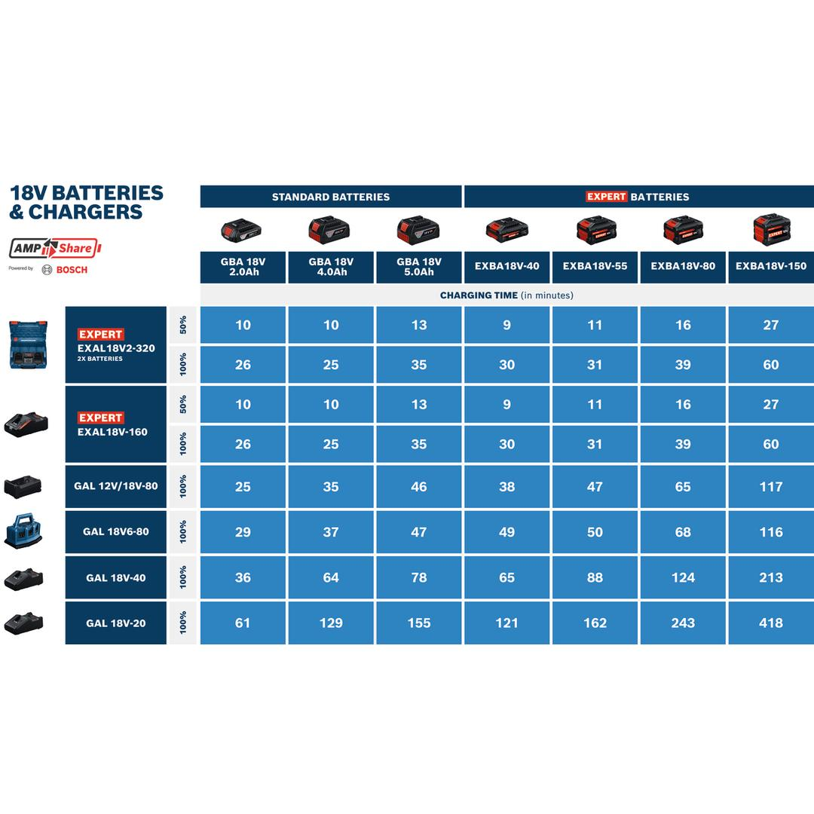
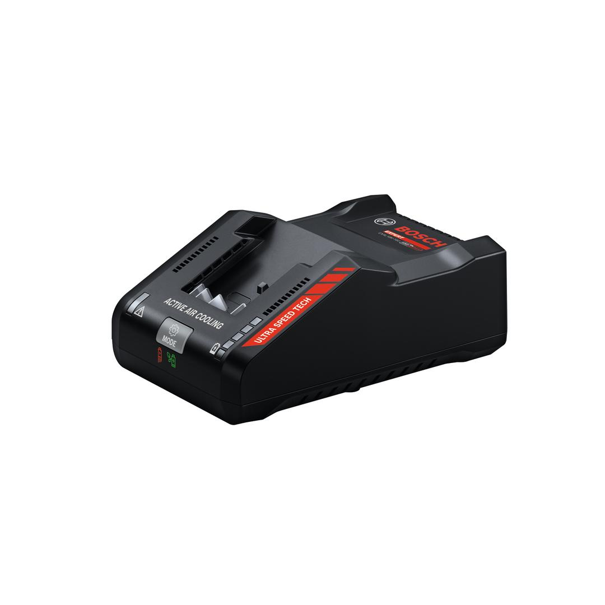

1600A03D3A





The ultra-fast charger EXPERT EXAL18V-160 only needs 39 minutes to fully charge an EXBA18V-80 battery, thanks to a charging current of 16A. Intelligent Active Air Cooling 2.0 cools the batteries efficiently, and FlexTemp Charging extends the battery charging temperature range of EXPERT batteries from -10°C to +55°C. Both features reduce downtime by enabling fast charging initiation of warm batteries, even after heavy duty applications. Furthermore, FlexTemp Charging also enables charging of cold batteries. This ultra-fast charger comes with three charging modes: Standard, Power Boost and Long Life. Modes can be activated via the charging mode button, depending on your needs. Power Boost mode is your choice for a full charge at the highest charging speed. Select Long Life mode for a gentler full charge, which helps extend battery lifetime.
| Charger dimensions (width) |
130 mm |
| Charger dimensions (length) |
195 mm |
| Charger dimensions (height) |
83 mm |
Ultra-fast charger
Ultra-fast charger for heavy-duty applications.5 LEDs indicate the precise state of charge of your battery. Compatible with the Bosch Professional 18V System and with the multi-brand battery alliance AMPShare.